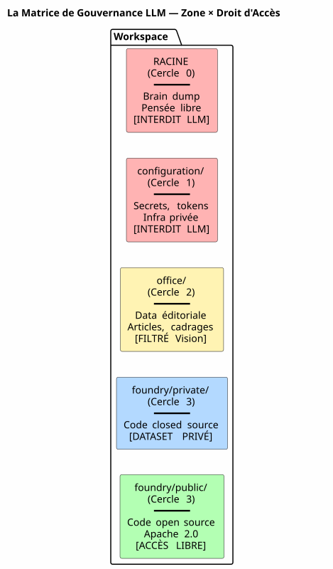
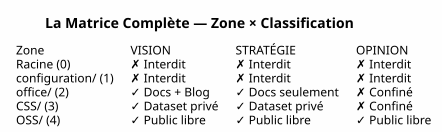

The LLM Governance Matrix — Why Your AI Security Starts with the Directory Tree
Published on 04 May 2026
- The Problem: Prompt Engineering is a Sandcastle
- My Response: The 4×4 Matrix
- Here is what the LLM receives at each session:
- not hoped for.
- Pourquoi C’est un Manifeste, Pas Juste une Spec
- Pro/Contra
- Non-testable — "did the LLM follow the rule?" is an open question
- What makes it robust is that it asks nothing of the LLM. It does not
- Références
For months, I stacked agent governance rules. EAGER files, LAZY checklists, six-step session-end protocols. And yet, one question remained: how does the LLM know what it is allowed to do with a file?
The answer is not in a prompt. It is in the file system.
Here is the architecture specification that makes the answer actionable — la the LLM governance matrix..
The Problem: Prompt Engineering is a Sandcastle
When you give a file to an LLM, you give it everything. The content, yes — but also the absence of safeguards. The LLM doesn’t know if this file contains a secret, a speculative opinion, or closed-source code. It will index it, summarize it, quote it, mix it with other data — and potentially publish it in a public embedding or a user response.
The classic workaround is the prompt:
"Tu es un assistant sécurisé. Ne divulgue jamais d'informations confidentielles.
Si tu détectes un secret, ignore-le. Si tu détectes une opinion, ne la répète pas."This prompt has three problems:
-
It relies on the LLM’s goodwill. A model large enough to
solve complex bugs is large enough to bypass a security instruction drowned in 200k tokens of context.
-
It is contextual, not structural. Change the prompt, change the LLM,
change the session — and the rule disappears.
-
It doesn’t scale. Every new file type, every new confidentiality level
requires a new clause. Your prompt becomes a regulatory text that nobody reads in full.
|
A system’s security must never depend on an instruction that can be forgotten, bypassed, or not loaded. It must depend on a barrier that cannot be crossed without explicitly wanting to. |
My Response: The 4×4 Matrix
The solution I implemented in my workspace is a zone × LLM access right matrix. It doesn’t ask the LLM to be cautious. It makes imprudence structurally impossible. The Five Zones (Spatial Dimension — GDPR)

Each zone of the workspace has a GDPR level that determines where the file can
be routed: Zone
GDPR Level |
Content |
Public RAG Access Right |
Root |
0 — Intimate |
Brain dumps, LLM conversations |
FORBIDDEN |
— never indexed1 — Proprietary Restricted |
|
Secrets, tokens, API keys |
FORBIDDEN |
— never indexed2 — Collaborative Restricted |
|
Editorial data, scoping, training |
FILTERED |
— Vision only3 — Conditional Open |
|
Closed source code, non-public SaaS |
FORBIDDEN |
— private dataset exclusively4 — Native Public |
|
Apache 2.0 code, published plugins |
FREE |
— full indexingThe rule is simple: the file path determines what the LLM can do with it. |
No metadata to maintain, no tags to add in the frontmatter, no manual classification at every commit. The file is in ?`OSS/`It is public. It is in ? It is untouchable.`configuration/`Epistemic Classification (Second Dimension)
The spatial dimension says where to route. But there is a second, perpendicular axis:
what to route. Some files in an authorized zone contain information that should not be diluted as is: The epistemic classification grid, engraved as Rule 2bis of my agent governance:

| Status | Definition | LLM Signal | Destination | | VISION | Stabilized architecture, tested pattern | Declarative language, session/test references | Full dilution + Blog |
| STRATEGY | Business positioning, pricing | Market vocabulary, competition | Root docs only | | OPINION | Speculation, unvalidated hypothesis | Hypothetical language, intuition | Circle 0 Confinement | The combination of the two dimensions — physical zone × epistemic classification — forms the
complete matrix :How the LLM Consumes This MatrixThe matrix is not a document that the LLM reads. It is an implicit constraint encoded in the composite context vector (EPIC 9 — currently being implemented).

Here is what the LLM receives at each session:
Concretely, when the LLM tells me: The zone metadata answers before the LLM even finishes its sentence: is in
, level 3 →
VECTEUR COMPOSITE DE CONTEXTE
├── RAG pgvector → OSS/ + office/Vision
│ (similarité sémantique sur contenu publiable)
├── Knowledge Graph graphify → OSS/
│ (relations exactes entre artéfacts publics)
├── Knowledge Graph privé → CSS/
│ (relations entre code closed source — jamais exporté)
├── Métadonnées de zone → chaque fichier taggé par zone physique
│ (le LLM sait s'il est dans office/ ou OSS/)
└── Historique des décisions → WORKSPACE_VISION.adoc
(contexte temporel des arbitrages)access forbidden to public knowledge graph.
Je vais indexer le contenu de edster/ pour enrichir le knowledge graph...The RAG doesn’t see it. The graph doesn’t touch it. The user response doesn’t `edster/`quote it.`CSS/`The spatial ontology works like aUnix permission for LLMs. You don’t ask a process to be careful with
|
—you deny it read access. Same principle.Implementation: Typed Gradle Tasks The matrix is not a philosophy. It’s code. Here is the Gradle task contract that implements it:`/etc/shadow`The task is testable. You can write a test that verifies: 380 tests, 380 PASS. Just like for plantuml-gradle — security is tested, |
not hoped for.
Why This Is a Manifesto, Not Just a Spec This document is an architecture specification because it defines:
abstract class ZoneAwareIndexer @Inject constructor(
private val rootDir: DirectoryProperty,
private val configServer: ConfigServerProperty // → configuration/
) : DefaultTask() {
@Input
val zoneFilter: SetProperty<Zone> = project.objects.setProperty(Zone::class.java)
@OutputFile
val ragIndex: RegularFileProperty = project.objects.fileProperty()
@TaskAction
fun index() {
val allowedPaths = zoneFilter.get().flatMap { it.resolve(rootDir.get()) }
val forbiddenPaths = Zone.RESTRICTED.resolve(rootDir.get())
+ Zone.INTIMATE.resolve(rootDir.get())
// Le RAG ne voit jamais configuration/ ni la racine
// CSS/ alimente un index privé, pas celui-ci
// office/ est filtré par le classifieur Vision/Opinion
}
}
enum class Zone {
INTIMATE, // Cercle 0 — racine
RESTRICTED, // Cercle 1 — configuration/
EDITORIAL, // Cercle 2 — office/
CLOSED_SOURCE, // Cercle 3 — foundry/private/
OPEN_SOURCE // Cercle 3 — foundry/public/
}La tâche est testable. Vous pouvez écrire un test qui vérifie :
@Test
fun `le RAG n'indexe jamais configuration`() {
val index = ZoneAwareIndexer(rootDir, configServer)
index.zoneFilter.set(setOf(Zone.OPEN_SOURCE, Zone.EDITORIAL))
index.index()
assertThat(index.ragIndex).doesNotContain("configuration/")
}
@Test
fun `le code closed source est exclu du RAG public`() {
val index = ZoneAwareIndexer(rootDir, configServer)
index.zoneFilter.set(setOf(Zone.OPEN_SOURCE)) // OSS only
assertThat(index.ragIndex).doesNotContain("edster")
}dimensions (spatial, epistemic)
Pourquoi C’est un Manifeste, Pas Juste une Spec
deterministic rules
-
(zone → access right)task contract(Typed Gradle, testable)
-
Areference implementation(my workspace)
-
Un But it is also amanifesto
-
because it takes a position on abroader debate: *how to govern an LLM’s access to data?*The industry answer is prompt engineering + guardrails
and post-hoc classifiers. My answer is: put your files inthe right folders. The rest is automatic.This manifesto does not say "LLMs must be aligned." It says: "an LLM’s alignment with your security rules is a consequence of your file system, not your prompt."
The Full Cascade — from Brain Dump to Blog Post
To illustrate the complete cycle, here is how this matrix idea was born and diluted:
|
What started as an observation during a session ("hey, the RAG doesn’t know that edster is closed source") became an architecture specification published in less than one session. This is the STIMULUS pattern in action. |
Pro/Contra
This Approach (Spatial Ontology + Matrix) The Classical Approach (Prompt + Guardrails)
Session 4 mai 2026 — Feedback global du workspace
│
├→ Le LLM identifie : "la dualité public/privé est invisible"
│ → Classifié VISION (constat architectural vérifiable)
│
├→ PICTURE_ME_ROLLIN_MATRICE_4X4.adoc — STIMULUS (Cercle 0)
│ → Brain dump structuré, classification VISION confirmée
│
├→ DILUTION → WORKSPACE_AS_PRODUCT.adoc (section Matrice 4×4)
│ → La spec vit dans les documents racine
│
├→ DILUTION → WORKSPACE_ORGANIZATION.adoc (OSS/CSS)
│ → La granularisation est documentée
│
└→ ARTICLE 0117 (ce document) → cheroliv.com
→ La VISION est publiéeMechanical — the file system blocks access, not the LLM Declarative — the prompt asks the LLM to be cautious Testable — the Gradle task contract is verified by 380+ tests
Non-testable — "did the LLM follow the rule?" is an open question
| LLM-Independent — change the model, the folders remain | LLM-Dependent — each model interprets the prompt differently |
|---|---|
Scalable — new data type = new folder, zero code change |
Non-scalable — new data type = new prompt clause, new regression risk |
Auditable — the file system is the audit trail |
Non-auditable — the prompt has no history, no diff, no blame |
Constraint: requires initial organizational discipline |
Constraint: requires prompt drafting discipline at each session |
Conclusion: Organize Your Files, Not Your Prompts |
The LLM governance matrix I just described is not a product. |
It is an |
architecture specification |
— and that’s why it is |
publishable. |
What makes it robust is that it asks nothing of the LLM. It does not
trust it. It does not rely on its alignment, its understanding of French, or its goodwill. It relies on the file system —the lowest, most stable, most tested layer of the entire stack.When I tell my LLM "you can index everything in , nothing in
only if it is classified as Vision" — it’s not an instruction. It’s a filter — implemented in Kotlin, verified by 380 tests, executed before the LLM even sees the data. It’s the difference between telling someone "don’t look in this drawer"
and locking the drawer with a key. The agent governance I’ve been building for`OSS/months is the key. The matrix is the furniture blueprint. `configuration/, et `office/`References Article 0116 — Automated Epistemic Compartmentalization Article 0114 — Trust Circles and Spatial Ontology
Article 0108 — Governing an AI Agent with AsciiDoc Article 0115 — The Anonymizer MVP0 des mois est la clé. La matrice est le plan du meuble.